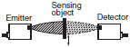
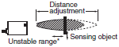
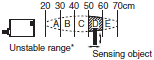

Ultrasonic Sensors
| Introduction | Features |
| Principles | Classifications |
| Engineering Data |
|
|
|
Troubleshooting |
What Is an Ultrasonic Sensor?
The Reflective Ultrasonic Sensor (Distance-adjustable or Zone-setting Convergent Reflective Sensor*) sends ultrasonic waves from an emitter toward a sensing object, then receives the reflected waves with a detector. The Sensor uses the resulting information to determine the presence of an object, or to measure the distance to the object. This type of Sensor determines the distance from the Sensor to an object based on the time required from when the ultrasonic waves are sent until they are received using the speed of sound.
There are also Through-beam Sensors* that detect the presence of an object by detecting the attenuation or interrupted condition of ultrasonic waves caused by an object passing between the emitter and detector.
*See Classifications below.
Features
1. Colors Do Not Influence Detection
Unlike photoelectric sensors, Ultrasonic Sensors can detect an object without being influenced by its colors. For example, if two objects have the same shape, even if one is transparent, such as glass, and the other is black plastic, they can both be detected with the same settings.
2. Detecting Objects over a Wide Area
Ultrasonic Sensors detect reflection from a wider area than photoelectric sensors, so they can check a wide area all at the same time.
3. Non-Contact Detection
Because Ultrasonic Sensors detect sensing objects without touching them, they do not scratch the sensing objects.
Operating Principle
Piezoelectric ceramics are used for ultrasonic transmission and reception.
What Are Piezoelectric Ceramics?
Piezoelectric ceramics generate electromotive force between the electrodes in proportion to the amount of mechanical force applied to the element. The reverse is also true. If voltage is applied between the electrodes, mechanical displacement is generated proportional to that voltage.
From the magnitude of the electromotive force, the presence of an object is detected and the distance from the Sensor to the object is measured.
Classifications
Classification by Sensing Method
| Through-beam | Detects the attenuation or interrupted condition of the ultrasonic beam caused by the object passing between the Emitter and Detector. Typical model: E4E2 |  | |
| Reflective | Convergent reflective (Distance adjustable) | Detects only the beam reflected from the object existing within the sensing distance range set with the distance adjuster. Typical model: E4C-UDA |  |
| Convergent reflective (Zone setting) | Detects only the beam reflected from the object existing in the sensing range set with the distance selector. Typical model: E4PA-N |  | |
*An object may be detected due to multiple reflection if the object is in the unstable range where the distance adjuster is ineffective, in which case however, the detection of the object will not be stable. Therefore, do not attempt to use the Ultrasonic Sensor to detect an object in the unstable range.